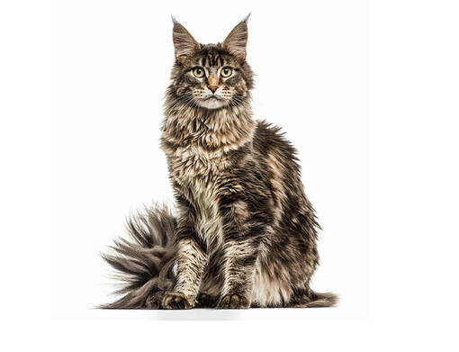

แมวเมนคูนเป็นสายพันธุ์แมวขนาดใหญ่ที่สุดในโลก รูปร่างแข็งแรงกำยาและขาแข็งแรง หัวทรงเหลี่ยม ใบหูใหญ่และตั้งตรง ขนด้านนอกมีลักษณะยาวหนาเป็นมันและกันน้ำได้ดี มีขนชั้นในซ่อนอยู่ข้างใต้ ส่วนขนที่หัว คอและไหล่จะสั้นกว่าจุดอื่นแต่จะค่อย ๆ ยาวขึ้นเรื่อย ๆ บริเวณส่วนหลัง ข้างลำตัวและหาง ส่วนท้องกับสะโพกมีขนดกและหนา ที่โคนหูจะมีขนยาวเป็นพู่งามสง่า โดยแมวเมนคูนเพศผู้จะมีขนส่วนนี้หนากว่าเพศเมีย ส่วนขนที่หางจะยาวนุ่มสลวย บริเวณปลายหูจะมีขนยาวแซมออกมา เช่นเดียวกับบริเวณอุ้งเท้า มองผ่าน ๆ เหมือนใส่รองเท้าขนฟูหุ้มอีกชั้น แมวเมนคูนเป็นแมวสายพันธุ์ที่เพาะเลี้ยงออกมาได้หลายสี มากกว่า 30 สีเลยทีเดียว ส่วนสีตาอาจมีสีเขียว ทองหรือทองแดง แต่ถ้าแมวสีขาวอาจมีตาสีฟ้าหรือตาสองสีก็ได้
